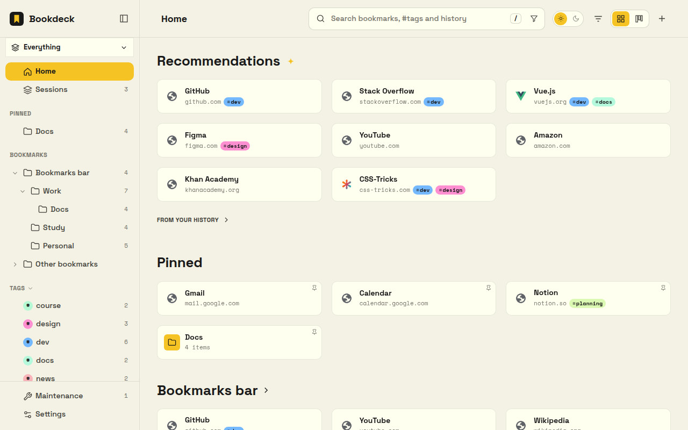
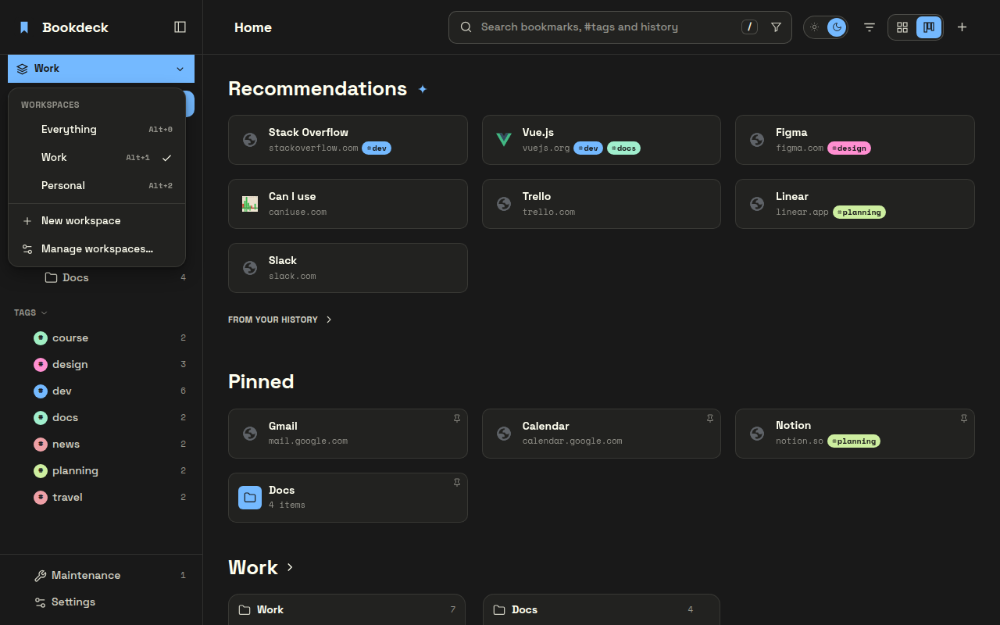
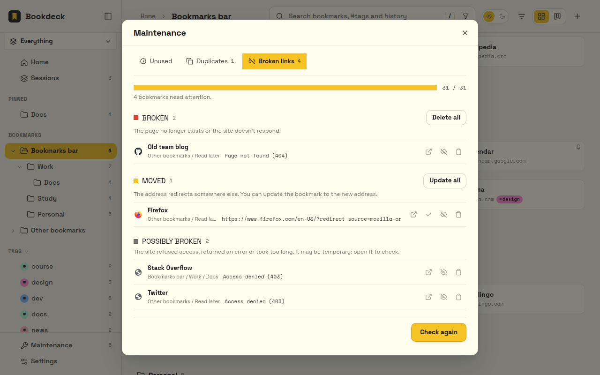

Your bookmarks, organized.
Seus favoritos, organizados.
Bookdeck is a browser extension for Chrome, Brave and Edge that turns every new tab into a dashboard for your bookmarks. Nothing you save ever leaves your browser.
O Bookdeck é uma extensão para Chrome, Brave e Edge que transforma cada nova guia num painel dos seus favoritos. Nada do que você salva sai do navegador.

What it doesO que ele faz
OrganizeOrganize
Folders as cards, rows or icons. Colored tags, search with / by name, address or #tag, pins, drag and drop.
Pastas em cartões, linhas ou ícones. Tags coloridas, busca com / por nome, endereço ou #tag, fixados, arrastar e soltar.
Workspaces & sessionsWorkspaces e sessões
Separate “Work” from “Personal”, switch with Alt+1, Alt+2… Save every tab of a window, groups included, and reopen it later.
Separe “Trabalho” de “Pessoal” e troque com Alt+1, Alt+2… Salve todas as abas de uma janela, com grupos, e reabra depois.
Keep it cleanMantenha em ordem
Find broken links, moved pages and duplicates, and fix many bookmarks at once, always with Undo.
Encontre links quebrados, páginas que mudaram e duplicados, e corrija vários favoritos de uma vez, sempre com Desfazer.

Private by designPrivado de verdade
No account to create, no ads, no tracking. Bookmarks, history, tags and sessions stay in your browser. The only thing Bookdeck checks online is whether you bought Pro. Read the privacy policy.
Sem criar conta, sem anúncios, sem rastreamento. Favoritos, histórico, tags e sessões ficam no seu navegador. A única coisa que o Bookdeck consulta pela internet é se você comprou o Pro. Leia a política de privacidade.
PricingPreços
FreeGrátis
- Folders, tags, search and history
- Up to 2 workspaces and 3 saved sessions
- Broken links, one folder at a time; duplicates
- Modern look, light and dark themes, 5 accent colors
- Manual backup to a .json file
- Pastas, tags, busca e histórico
- Até 2 workspaces e 3 sessões salvas
- Links quebrados, uma pasta por vez; duplicados
- Visual moderno, temas claro e escuro, 5 cores de destaque
- Backup manual em arquivo .json
Bookdeck Pro
- Sync tags, workspaces, sessions and settings across computers
- Daily or weekly automatic backups
- Unlimited workspaces and sessions
- Brutal and cyberpunk looks, any accent color, a look per workspace
- Advanced tag search and unused-bookmark finder
- Check your whole library for broken links and fix them in bulk
- Sincronize tags, workspaces, sessões e configurações entre computadores
- Backup automático diário ou semanal
- Workspaces e sessões ilimitados
- Visuais brutal e cyberpunk, qualquer cor de destaque, visual por workspace
- Busca avançada por tags e favoritos parados
- Verifique a biblioteca inteira e corrija links em lote
Pro is a one-time payment of US$ 12 (taxes may apply), bought inside the extension. It unlocks Pro for good, with no subscription. Payments are processed by Stripe through ExtensionPay. Not happy? Full refund within 14 days.
O Pro é um pagamento único de US$ 12 (podem incidir impostos), feito dentro da extensão. Libera o Pro para sempre, sem assinatura. Os pagamentos são processados pelo Stripe, via ExtensionPay. Não gostou? Reembolso integral em até 14 dias.
ContactContato
Questions, support or refunds: eduardorosa.drd@gmail.com. Bookdeck is made by an independent developer in Brazil; replies usually within 2 business days.
Dúvidas, suporte ou reembolsos: eduardorosa.drd@gmail.com. O Bookdeck é feito por um desenvolvedor independente no Brasil; respostas geralmente em até 2 dias úteis.
